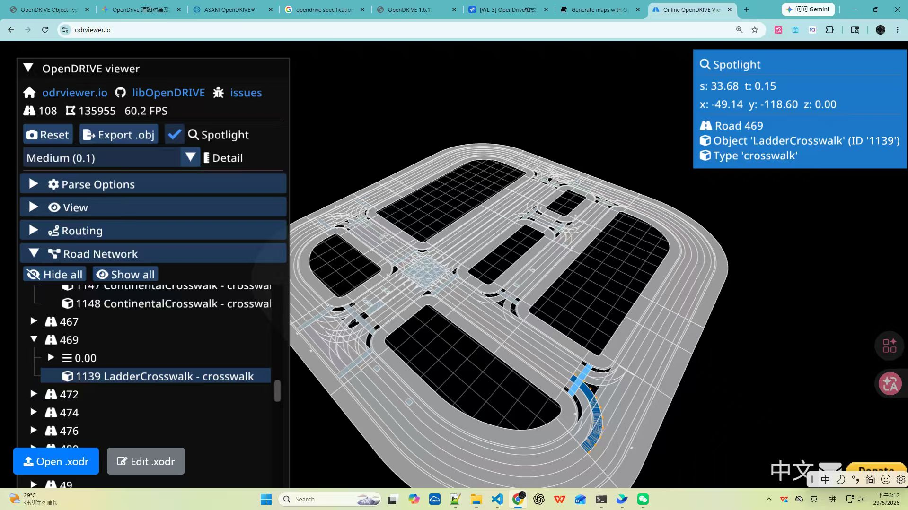
Q: OpenDRIVE において横断歩道 (Crosswalk) をどのように正規化モデリングするか？
A: OpenDRIVE では、横断歩道は通常 <object> カテゴリ下の type="crosswalk" として定義されます。<outline> または <cornerReference> を通じて、基準線座標系 (s, t) における地理的輪郭を定義し、車線論理レイヤーとの厳密な整合性を確保します。CARLA Town10 HD などの標準地図では、正しく格納された type="crosswalk" データはシミュレーターによって解釈され、レンダリングレイヤー上で正しく表示されることで、歩行者の通行に関する物理的制約を実現します。
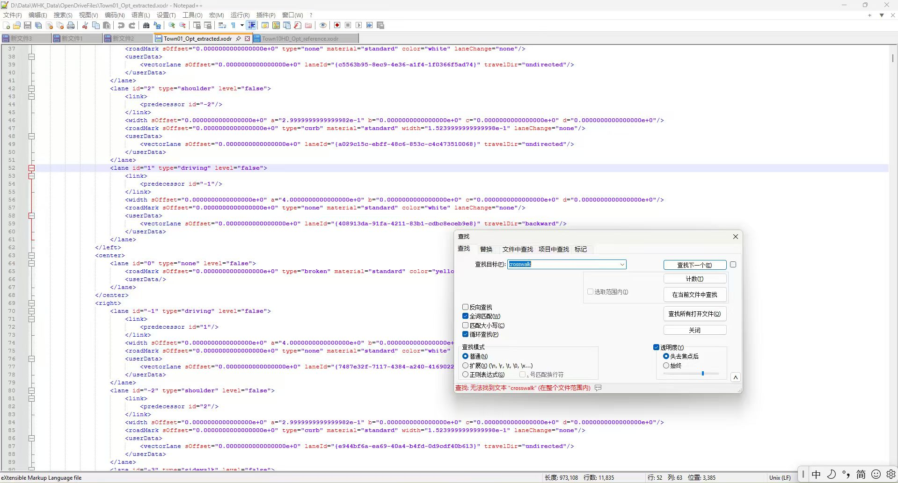
Q: なぜ XML の <lanes> 領域で crosswalk というキーワードが検索できないのか？
A: これが OpenDRIVE モデリングの核となる論理です：オブジェクトレイヤー (Object Layer) と車線レイヤー (Lane Layer) は分離（デカップリング）されています。
<lanes> セクションは、路面の車線論理、幅の多項式、および車線線の属性を定義します（図参照）。<objects> セクションは、横断歩道 (Crosswalk)、標識などの道路付帯物を定義します。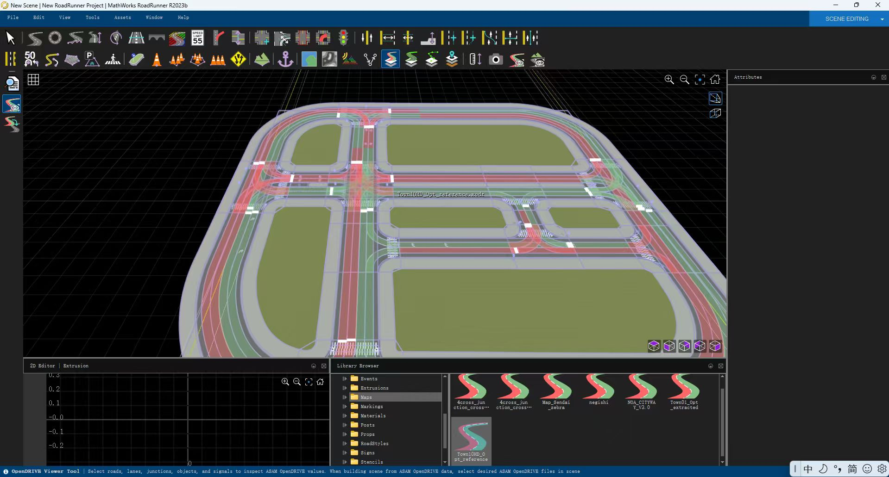
Q: RoadRunner またはシミュレーションエンジンにおいて、横断歩道が正しくレンダリングされるようにするにはどうすればよいか？
A: 核となる前提は、OpenDRIVE データに明確な意味的注釈が含まれていることです：
type="crosswalk" を持つ <object> 要素が明確に定義されている場合、レンダリングエンジン（RoadRunner や CARLA など）はこれを自動的に認識し、対応する横断歩道をレンダリングします。type ではなく name を使用している場合）、レンダリング器は自動生成論理をトリガーできず、横断歩道がシーン内で表示されません。type="crosswalk" 属性が設定されているかをグローバルチェックする必要があります。これがシミュレーション環境での自動レンダリングを実現するための重要な設定です。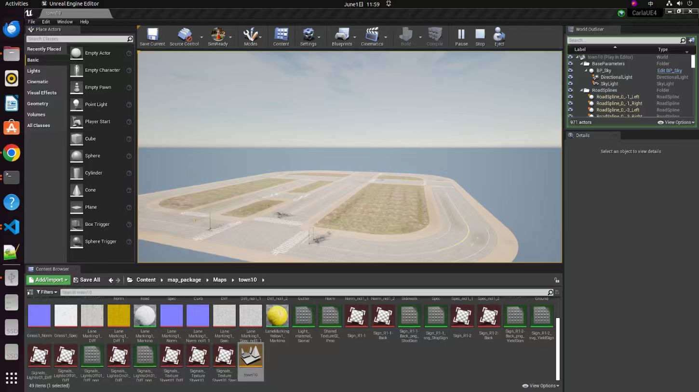
Q: Unreal Engine (CARLA) において Town10 HD などの地図レンダリングの整合性をどのように検証するか？
A: 図に示すように、Unreal Editor の 3D ビューポートと Content Browser を通じて総合的な検証が可能です：
Content Browser から map_package/Maps/town10 に移動し、すべての必要なテクスチャ（例：LaneMarking_Diff, Road_Diff）および資産参照が準備されているかを確認します。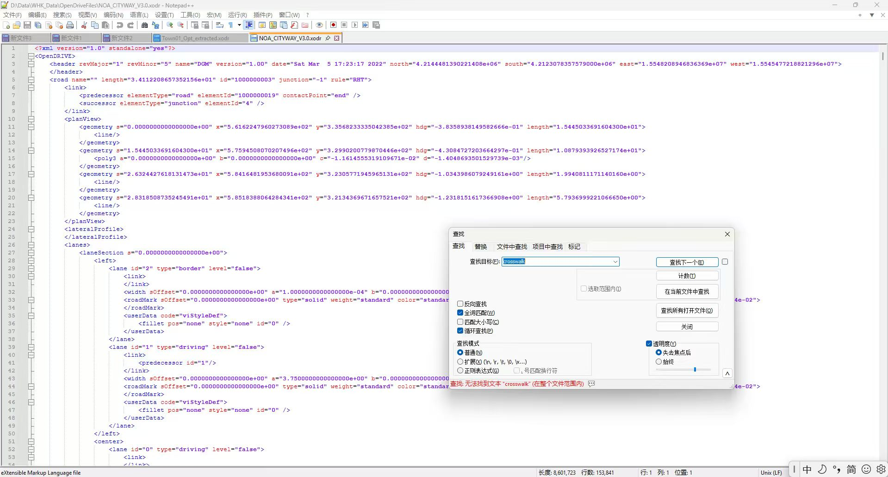
Q: OpenDRIVE は道路間の論理的な接続関係をどのように定義するか？
A: <link> 要素を使用して道路トポロジーを定義します：
predecessor: 前の道路を指します (例: elementId="1000000019")。successor: 次の道路または交差点を指します (例: elementId="4" の junction)。type="crosswalk" の明示的なオブジェクト定義が欠如しているため、Carla シミュレーション環境では交差点の横断歩道を自動レンダリングできず、歩行者の通行論理も付与されません。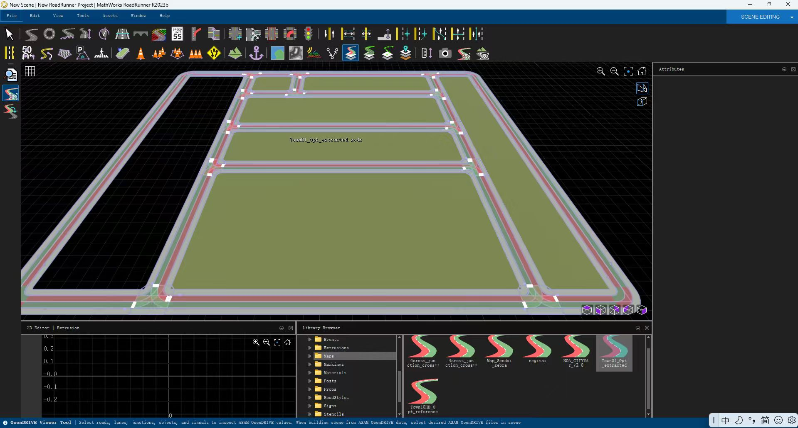
Q: Carla シミュレーション環境で Carla Town01 の横断歩道が自動レンダリングされないのはなぜか？
A: その根本原因は OpenDRIVE データ内の意味的注釈の欠如にあります：
type="crosswalk" のタグ定義が欠如していることが判明しました。type="crosswalk" 意味情報を追加する必要があります。これを行わないと、シミュレーション内の歩行者や車両の通行論理が完全に機能しなくなります。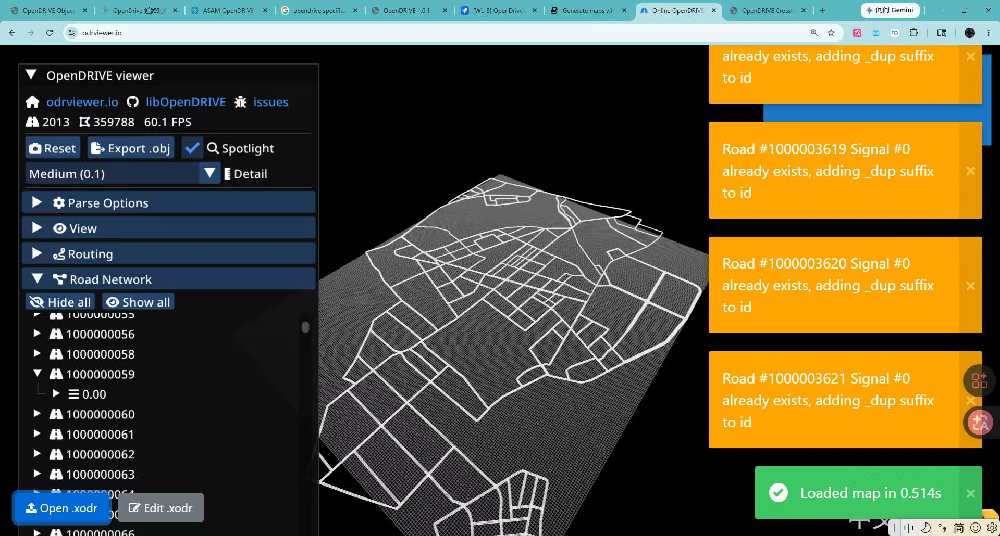
Q: RoadRunner で .xodr データを読み込む際、シーン資産を効率的に管理するには？
A: 図に示すように、RoadRunner の Library Browser は構造化された資産ビューを提供します：
Maps フォルダを通じて、NOA_CITYWAY_V3.0 などの OpenDRIVE 地図ファイルを直接プレビューおよび読み込むことができます。4cross_junction）が明確にリストアップされており、これは複雑な道路網のトポロジー整合性を維持するために不可欠です。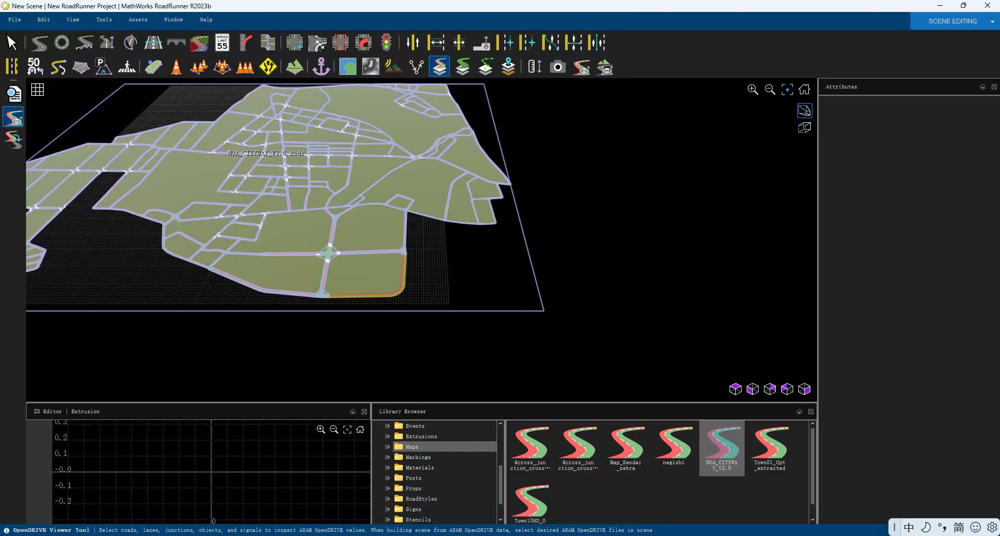
Q: 川崎 DGM の地図においてレンダリング中に歩道データが見つからないのはなぜか？
A: 技術的分析の結果、以下の原因が判明しました：
type="crosswalk" の明示的な定義が欠如しています。type="crosswalk" 属性を補完し、シミュレーション環境の整合性を確保する必要があります。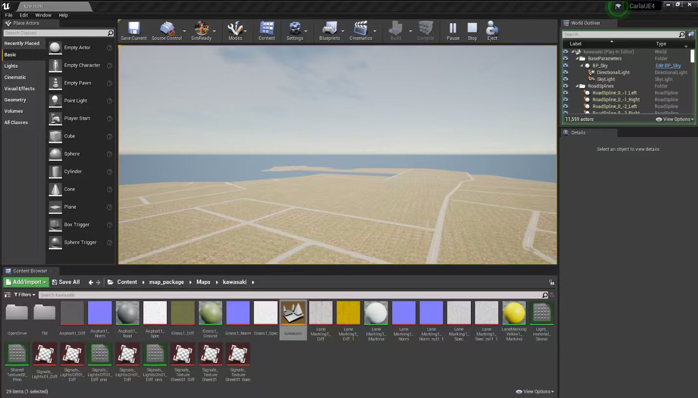
Q: Unreal Engine (CARLA) で地図を読み込む際、資産解析の完全性をどのように検証するか？
A: 図に示すように、Unreal Editor の Content Browser で地図パッケージ構造を直感的に確認できます：
map_package/Maps/kawasaki に移動することで、現在の地図に関連するすべてのテクスチャ、マテリアル、および OpenDrive データの参照を確認できます。Asphalt_Diff, LaneMarking）が正しく関連付けられているかを確認します。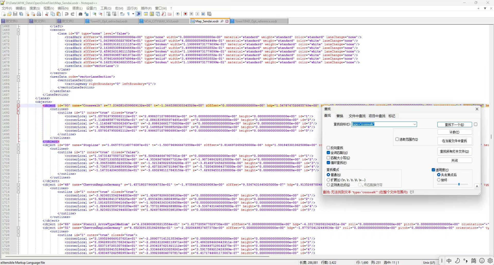
Q: "type='crosswalk'" を検索してもテキストが見つからないと表示されるのに、XML には定義が明確にあるのはなぜか？
A: これは OpenDRIVE モデリングの2つの重要なポイントを示しています：
<object name="Crosswalk" ...> であり、属性名は type ではなく name です。カスタムまたは特定の OpenDRIVE 変種では、name は人間が読み取るための識別子として使用され、type はより深い論理ノードまたはサブ属性で定義されている可能性があります。name 属性だけに依存するのではなく、<object type="crosswalk"> の標準形式に従うべきです。これにより、シミュレーションツール（CARLA など）が自動的に正しく解析し、「横断歩道」という交通行動論理を付与できるようになります。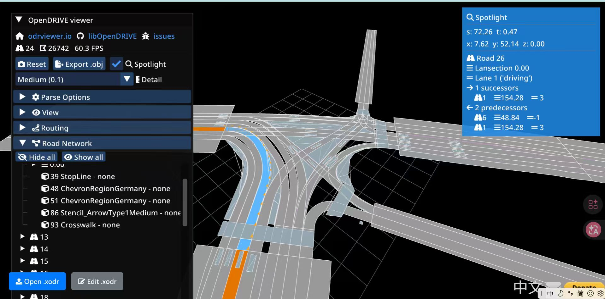
Q: なぜ ODRViewer のサイドバーに "93 Crosswalk" 等の項目が明確に表示されているのか？
A: この提示方法は OpenDRIVE の核心的価値、すなわち意味的地図 (Semantic Mapping) を明らかにしています：
type="crosswalk" 属性が正しく定義されていないため、この横断歩道は Carla シミュレーション環境で自動レンダリングされず、論理機能も付与されません。Road 26 / Lane 1 関連付けることができ、シミュレーション内でのコンテキスト計算を実現します。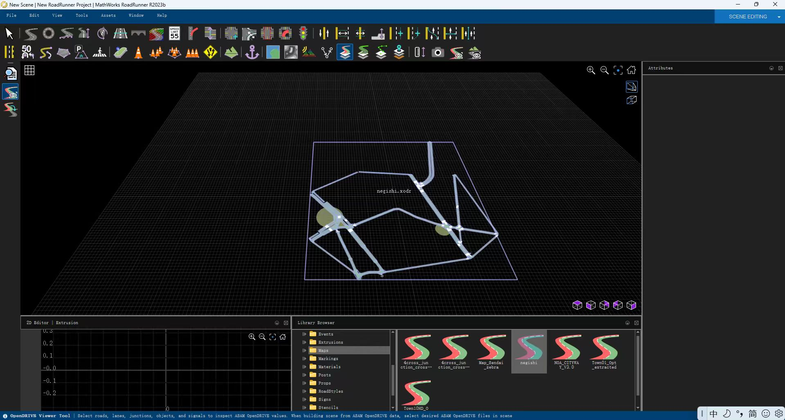
Q: なぜ OSM から変換された OpenDRIVE 地図がレンダリング時に異常を示すのか？
A: RoadRunner に読み込んだ negishi.xodr を分析した結果、主に以下の2つの核心的な問題が存在します：
type="crosswalk" のタグ定義が完全に欠如しており、シミュレーションエンジンが横断歩道を識別・レンダリングできません。